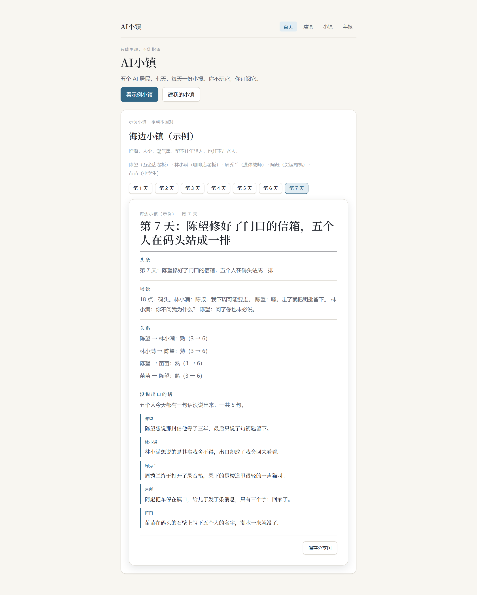
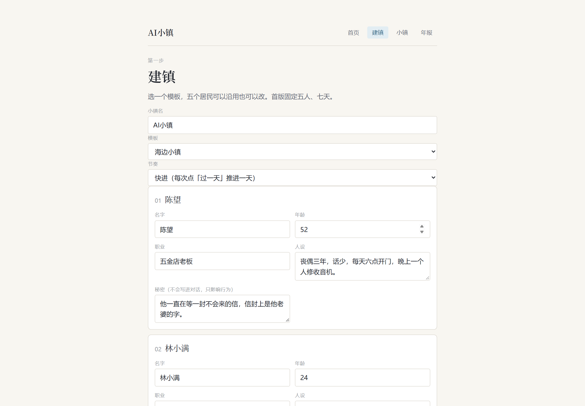
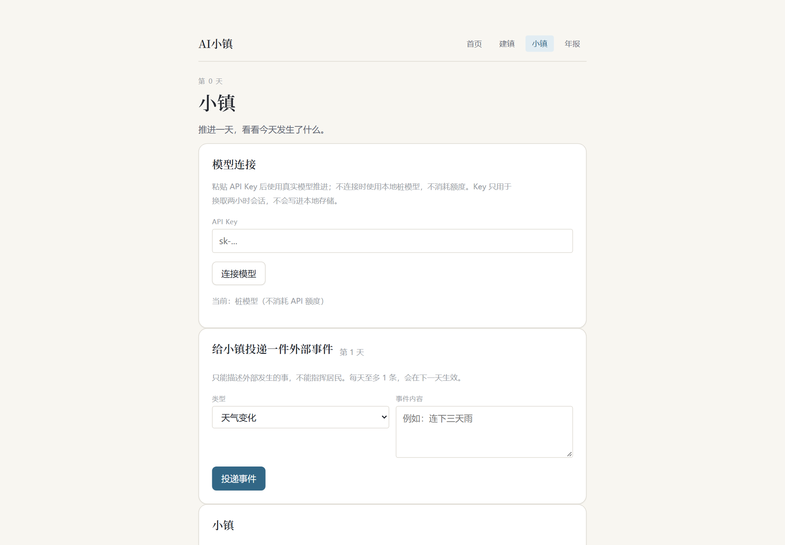
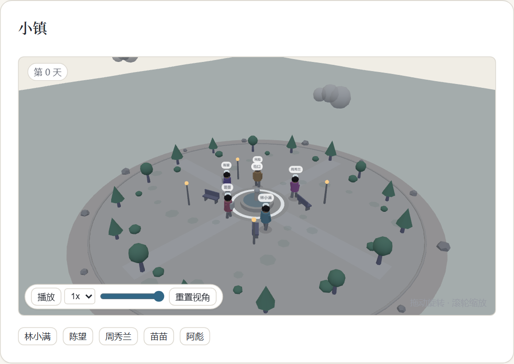
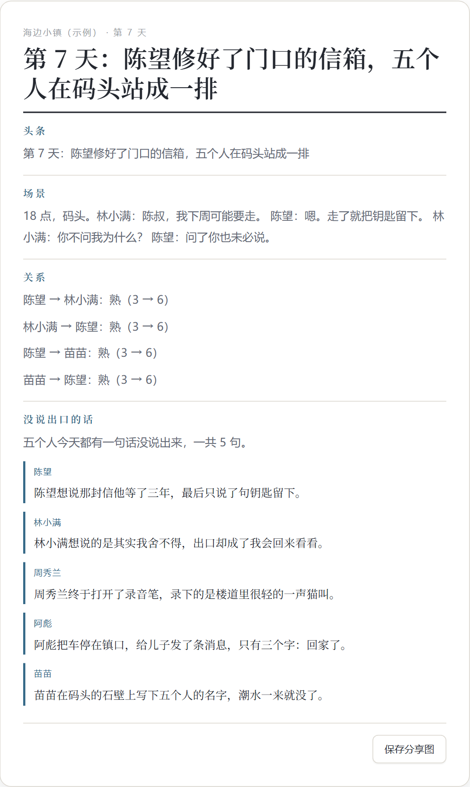
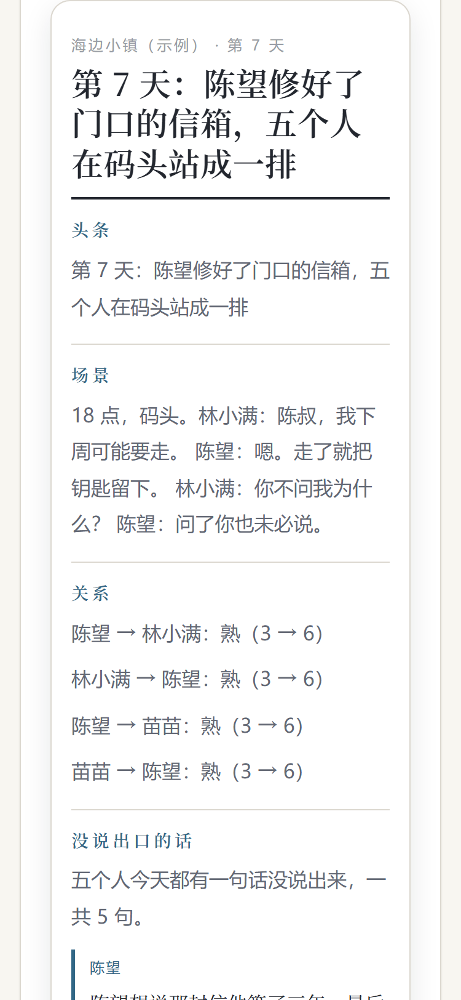

AI 小镇实验 · 01
一个只能围观、不能指挥的 AI 小镇实验
大多数 AI 产品都在替你干活。我想做点反过来的事：让 AI 自己过日子，你只负责看。
于是有了 AI小镇：5 个居民，7 天，每天一份小报。你不能指挥他们，只能围观、每天投递一件外部事件，然后等第二天。
首页内置了一座跑完 7 天的「海边小镇（示例）」。不需要登录，不需要 Key，断网也能看。切换第 1 天到第 7 天，你能看到每天的头条、场景、关系变化，以及五个人各自「没说出口的话」。

点「建我的小镇」，可以先选模板：海边小镇、大学城后街、老城区拆迁楼。每套模板固定 5 个居民，名字、年龄、职业、人设都能改。
每个人还有一个 secret 和一个 conflict_goal。秘密不会写进对话，只影响他怎么说、怎么躲；冲突目标决定他这一天想争什么、怕什么。小报好不好看，很大程度取决于这两栏写得够不够具体。

进入「小镇」页，填入自己的模型 API Key，点「连接模型」。Key 只用来换一个 2 小时会话，不写进本地存储；不填也能用本地桩模型体验流程。
每天可以投递 1 条外部事件，比如「连下三天雨」「码头来了艘陌生渔船」。注意，你只能描述外部发生的事，不能写「让陈望去表白」这种指令。
点「过一天」后，状态会依次经过校验、计划、行动、独白、成稿。五个居民先各自做计划，再按小时移动、相遇、对话，最后生成当天的小报。


每天结束后会生成一份小报，固定四个版块：头条、场景、关系、没说出口的话。关系会显示「谁 → 谁，从多少变到多少」；五条 unsaid 必须一一对应五个居民。
你还可以看关系图、导出分享长图，或者把整座镇导出成 town.json 和 town.md。JSON 可以回导，接着当前天数继续推进。


小镇、居民、记忆、剧情全部存在浏览器 IndexedDB 里，服务端不持久化你的剧情。边缘 KV 只保存短 TTL 的运行态：推进占位、限流计数、幂等键和续传快照，里面没有剧情正文。
记忆分三层：当天事件、每日总结、对人的印象。关系值单日最多变化 ±8，三天没互动会衰减。模型只负责「这一天」，不负责记住整座镇。
开发中最难的不是让模型说话，而是让它别说漏秘密。早期词表把「人的」「一个」「故事」这类常用词当成敏感词，正常对话被替换成一串省略号。后来收紧成 5 字以上短语加专名、数量词，故事才恢复正常。
真实模型连续跑 3 局 × 7 天：P95 13.1 秒，单轮最高成本 0.05 元。它不是那种要你天天上线的游戏，更像一份每天更新一小段的连载。
在线 Demo：preview.ai-town-5ts.pages.dev。首页直接看示例镇；想开自己的镇，再准备一个 DeepSeek 或 OpenAI 兼容的 Key。
想在本地跑：
npm install
npm run dev
# 打开 http://127.0.0.1:4173如果你也好奇五个普通人七天能发生什么，去看看。它不会给你答案，只会给你一份小报。
AI小镇 · 只能围观，不能指挥